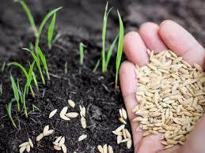

Importance Of Certified Seeds
New genetics
Improved traits such
as better yield,
pest resistance,
drought tolerance,
and much more are
delivered to farmers
in certified seeds

Guarantee quality assurance
Inspections in the field and at the
processing plant ensures that all
quality assurance requirements
have been met and dcumented
.Your seed is what you expect it
to be ,allowing you to back
up your assurance to others.

Clean seed
Certified seed is grown and
processed under stringent
production requirements
with strict limits on weeds
and other crop kinds.